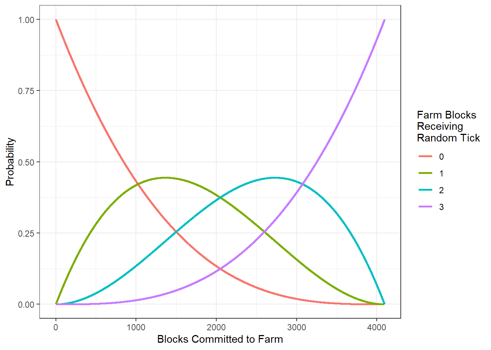
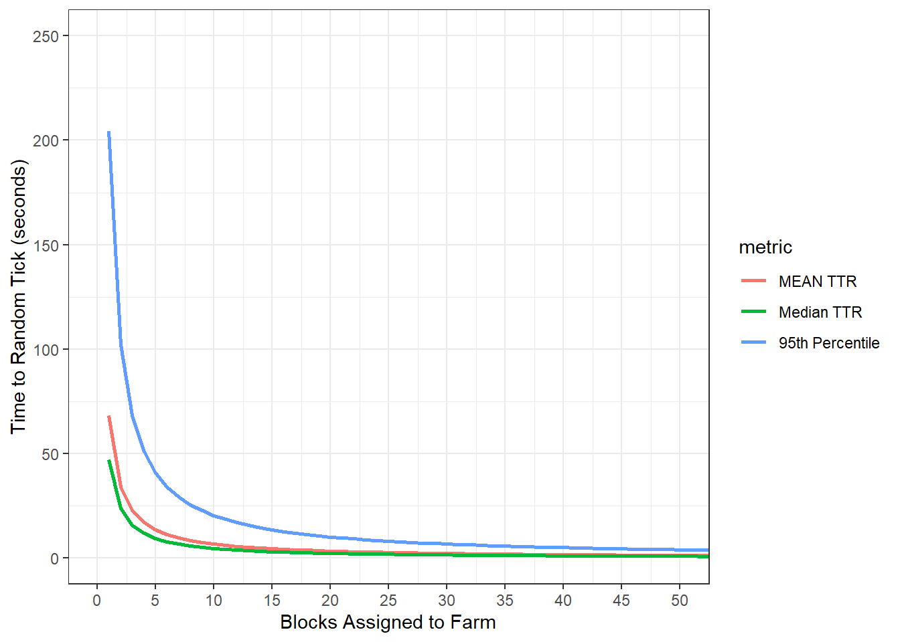

2 Growth Related Tick Mechanics
Timed mechanics in Minecraft are operated on a tick system.
A game tick is where Minecraft’s game loop runs once. The game normally runs at a fixed rate of 20 ticks per second, so one tick happens every 0.05 seconds (https://minecraft.fandom.com/wiki/Tick#Game_tick)
Whereas this document is focused in growth mechanics, no time will be spent discussing the many operations performed in a tick. The reader is encouraged to refer to the Minecraft wiki for more details about ticks.
The operation of a tick that is of interest to this document is the random tick. A random tick is not a unit of time, as is the case with a tick, but is the assignment of an attribute or state to a randomly selected block. A selected block is said to “receive a random tick.”
Minecraft worlds are subdivided into chunks, or vertical columns that are each 16 blocks square.
Chunks consist of one subchunk per 16 blocks of height, each one being a 16 × 16 × 16 = 4096 block cube. Sections are distributed vertically starting at the lowest y level. Every chunk tick, some blocks are chosen at random from each section in the chunk. The blocks at those positions are given a “random tick”.
In Java Edition, the number of blocks chosen from each section is specified by /gamerule randomTickSpeed (defaults to 3), and one block can be chosen multiple times in one chunk tick. (https://minecraft.fandom.com/wiki/Tick#Random_tick)
In the process of farming, the player is rarely interested in a single block within the subchunk. It is of greater interest to know if one or more of the blocks dedicated to farming a resource will receive a random tick. Under default game conditions, at most three blocks dedicated to a farm may receive a random tick.
2.1 Probability of Random Tick Assignment
Mathematically speaking, the blocks chosen to receive a random tick are randomly selected with replacement from the allotment of 4,096 blocks. Based on this information, the probability that any single block is chosen for a random tick within any chunk tick is
\[ \Pr(RTick) = \frac{3}{16 \cdot 16 \cdot 16} = \frac{3}{4096} \approx 7.3242188\times 10^{-4} \]
This probability calculation, however, only applies to a farm with exactly one block dedicated to farming within a subchunk. Whereas the player is likely to dedicate multiple blocks to farming, the probability distribution must account for blocks being selected from among the farm-dedicated blocks and the blocks outside of the farm. The Hypergeometric distribution satisfies this need. The hypergeometric distribution may be applied using the following definitions
- \(B =\) Number of blocks in a subchunk (\(16^3 = 4,096\)).
- \(F =\) Number of blocks dedicated to the farm.
- \(rts =\) Random tick speed, or the number of random ticks assigned per tick.
- \(F_r =\) The number of blocks of farm land that receive a random tick.
- With the conditions \(0 \leq F_r \leq rts \leq F \leq B\).
Under these conditions, the probability of \(F_r\) random ticks assigned within a farm of size \(F\) is denoted
\[ \Pr(RTick, F_r | F) = \Pr(F_r = f_r | F) = \frac{{F \choose f_r}{B - F \choose rts - f_r}}{{N \choose rts}} \]
By way of comparison, the probability of a farm with size \(F = 1\) receiving a random tick (the conditions equal to the simple calculation of \(\Pr(RTick)\) above) is
\[\begin{aligned} \Pr(RTick, F_r = 1 | F = 1) &= \Pr(F_r = 1 | F = 1) \\ &= \frac{{F \choose f_r}{B - F \choose rts - f_r}}{{N \choose rts}} \\ &= \frac{{1 \choose 1}{4096 - 1 \choose 3 - 1}}{4096 \choose 3} \\ &= \frac{1 \cdot {4095 \choose 2}}{4096 \choose 3} \\ &= \frac{8382465}{11444858880} \\ &= 7.3242188\times 10^{-4} \end{aligned}\]
Although this is a significantly more complicated calculation, it provides the ability to change focus from “did a block receive a random tick” toward “how many blocks of farmland received a random tick.”
The following table shows the probability of zero, one, two, or three blocks within a farm receiving a random tick for farms ranging in size from one block to ten blocks. Notice that in the column for 1 block receiving a random tick (Fr = 1), the probability steadily increases as the number of farm blocks increases. This is intuitive; it is reasonable to expect a higher probability of one block being assinged a random tick if there are more opportunities for assignment.
| Farm Blocks | Pr(Fr = 0) | Pr(Fr = 1) | Pr(Fr = 2) | Pr(Fr = 3) |
|---|---|---|---|---|
| 1 | 0.9992676 | 0.0007324 | NA | NA |
| 2 | 0.9985355 | 0.0014641 | 4.00e-07 | NA |
| 3 | 0.9978038 | 0.0021951 | 1.10e-06 | 0 |
| 4 | 0.9970725 | 0.0029254 | 2.10e-06 | 0 |
| 5 | 0.9963415 | 0.0036550 | 3.60e-06 | 0 |
| 6 | 0.9956108 | 0.0043838 | 5.40e-06 | 0 |
| 7 | 0.9948806 | 0.0051119 | 7.50e-06 | 0 |
| 8 | 0.9941506 | 0.0058394 | 1.00e-05 | 0 |
| 9 | 0.9934211 | 0.0065661 | 1.29e-05 | 0 |
| 10 | 0.9926919 | 0.0072921 | 1.61e-05 | 0 |
This concept can be extended into the plot below which illustrates how the probabilities of one, two, and three blocks receiving a random tick increase as more blocks in the subchunk are assigned to the farm. One of the interesting features of this plot is that the probability of one block receiving a tick is not monotonic; it begins to decrease and returns to zero. Again, this is intuitive; if the majority of the blocks are assigned to farm land, it becomes more likely that either two or three blocks receive the random tick. If all 4,096 blocks are assigned to farmland, all three random ticks are assigned to a farm block, pushing \(\Pr(Fr = 1)\) to 0.

2.2 Time to Random Tick
The Time to Random Tick (\(TTR\)) is a measure of how much time passes between a block receiving random ticks. Because these times are based on game mechanics, they are uninfluenced by the specific mechanics of the crop being farmed. They are impacted, however, by the number of blocks in the subchunk assigned to the farm. Specifically, the time to a single block receiving a random tick decreases as the size of the farm increases. As a general measure of crop productivity, the player is likely most interested in the time to any random tick in the farm.
The \(TTR\) may be used to make rough estimates of crop yield, but the player should be aware that such estimates will be somewhat biased as they do not weight correctly for whether one, two, or three blocks receive the random tick. Still, for farms of less than 100 blocks, these rough estimates are likely to be close to the true value.
2.2.1 Mean \(TTR\)
The mean \(TTR\), denoted \(TTR_\mu\), gives the mean time between random tick assignments. It is based on the mean of the Geometric distribution with parameter \(p = \Pr(RTick, F_r > 0 | F )\). For a farm consisting of a single block
\[\begin{aligned} TTR_\mu(F = 1) &= \frac{1}{\Pr(RTick, F_r = 1 | F = 1)} \\ &= \frac{1}{7.3242188\times 10^{-4}} \\ &\approx 1365.3333333 \end{aligned}\]
For a farm consisting of \(F = 10\) blocks of farmland, the calculations develop more complexity
\[\begin{aligned} TTR_\mu(F = 10) &= \frac{1}{\Pr(RTick, F_r > 0 | F = 10)} \\ &= \frac{1}{\sum\limits_{i = 1}^{3} \Pr(RTick, F_r = i | F = 10)} \\ &= \frac{1}{0.0073081} \\ &= \frac{1}{0.0073081} \\ &= 136.8338712 \end{aligned}\]
2.2.2 Median \(TTR\)
The Median \(TTR\), denoted \(TTR_M\), gives the median time between random tick assignments. Fifty percent of random ticks will be assigned in less time than \(TTR_M\) and fifty percent will be assigned in more than \(TTR_M\). Because the Geometric distribution is a right skewed distribution, the median is somewhat lower than the mean. It follow that \(TTR_M < TTR_\mu\). Estimations of crop yield using \(TTR\) will differ depending on whether the calculations are based on \(TTR_\mu\) or \(TTR_M\), with the \(TTR_\mu\) estimates being more conservative (lower).
The \(TTR_M\) for a single block of farmland is
\[\begin{aligned} TTR_M(F = 1) &= \frac{-1}{\log_2(1 - p)} \\ &= \frac{-1}{\log_2(1 - \Pr(RTick, F_r = 1 | F = 1))} \\ &= \frac{-1}{\log_2(1 - 7.3242188\times 10^{-4})} \\ &= \frac{-1}{\log_2(0.9992676)} \\ &= \frac{-1}{-0.001057} \\ &= 946.0303346 \end{aligned}\]
The \(TTR_M\) for a single block of farmland is
\[\begin{aligned} TTR_M(F = 10) &= \frac{-1}{\log_2(1 - p)} \\ &= \frac{-1}{\log_2(1 - \sum\limits_{i = 1}^{3} \Pr(RTick, F_r = i | F = 10))} \\ &= \frac{-1}{\log_2(1 - (0.0072921 + 1.6065729\times 10^{-5} + 1.0485057\times 10^{-8}))} \\ &= \frac{-1}{\log_2(1 - 0.0073081)} \\ &= \frac{-1}{\log_2(0.9926919)} \\ &= \frac{-1}{-0.0105821} \\ &= 94.4990148 \end{aligned}\]
2.2.3 TTR Quantiles
It is also possible to calculate various quantiles of TTR, denoted \(TTR_p\). The formulae for these equations are not simple, but computer algorithms exist that can efficiently produce these results. This document uses R software to calculate quantiles when needed.
2.2.4 TTR Overview
The following plot illustrates the relationship between farm size and \(TTR\). Large reductions in \(TTR\) occur be increasing the size of the farm past five blocks. Farms of size 20 blocks are likely to have at least one random tick assigned with in 2.36 seconds, while farms of size 50 blocks are likely to have at least one random tick within 0.94 seconds. Although being assigned a random tick is not a guarantee of growth, growth cannot happen without the random tick. Thus, reducing time to random tick assignment is an essential part of increasing crop yield.
